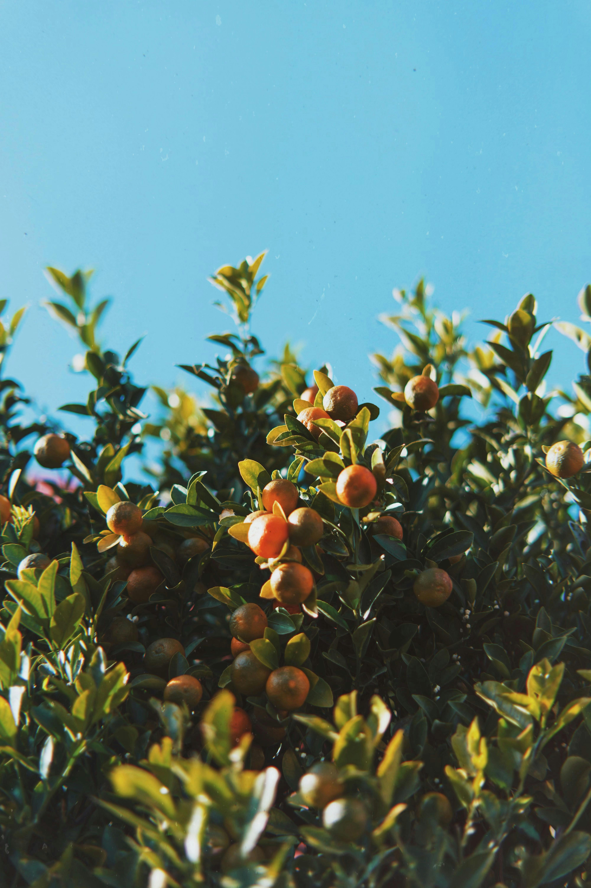

About Our Farm
At Rue Citrus Farm, we believe that great fruit begins with healthy soil, clean water, and sustainable farming practices. Located in the fertile lands of Kitui, Kenya, our farm has grown from a small family venture into a trusted source of fresh and juicy citrus fruits.
Our dedicated team of farmers works tirelessly to cultivate a variety of citrus fruits, including oranges, lemons, and limes. We prioritize organic farming methods, avoiding harmful pesticides and chemicals to ensure that our produce is not only delicious but also safe for our customers and the environment.
